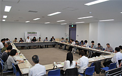

|
|
■議 題
8月はプレ学習会と実行委員会が別の日程であること、また、広い会場のため多数の参加の呼び掛けをお願いしました。 司会、大会アピール、オープニング、大会スローガン、保育について意見交換し、時間の目安と役割分担を一部確認しました。 調査の進め方、アンケートの内容や調査後の結果の活かし等について意見交換しました。 ｢食｣｢医療･社会保障｣｢消費者問題｣｢環境｣、ほか｢地域力、コミュニティ、防災｣を引き続き計画するか、｢教育・子育て｣も必要なのでは等、意見交換をしました。 プレ学習会の参加、県への要請、大会スローガン、基調報告、分科会担当の希望など、次回までにFAXで返信頂くことを確認しました。 【第1回プレ学習会】6月19日(火)10:00～12:00 浦和コミュニティセンター 【第3回実行委員会】6月19日(火)13:30～15:30 浦和コミュニティセンター |